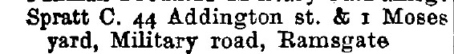
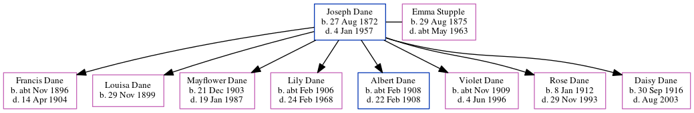

Joseph Dane 1872 - 1957
[ Home ] | [ Calendar ] | [ Surnames Index ] | [ Census Index ] | [ Family History ]A master mariner, licensed victualler, Joseph Dane, the husband of Emma Jane Stupple (the first cousin three-times-removed on the mother's side of Nigel Horne), was born in Faversham, Kent, England on Aug 27, 18721,2,3 and married Emma (a domestic general servant with whom he had 8 children: Francis, Louisa Alice Maud, Mayflower, Lily Josephine, Albert, Violet Elizabeth, Rose Victoria and Daisy Lillian) at St Mary Of Charity in Faversham on Jan 1, 18964.
During his life, he was living at West Street in Faversham on Apr 3, 188110; at 3 Danes Cottage in Faversham on Mar 31, 19019; on Two Brewers, 1 Quay Lane in Faversham on Apr 2, 19118 and in 19137; at 44 South Road in Faversham in Nov 19235; and at 24 South Road in Faversham in 19386 and on Sep 29, 19391.
He died on Jan 4, 1957 in Sittingbourne, Kent, England3.
Children
- Francis was born c. Nov 1896
- Louisa Alice Maud was born on Nov 29, 1899
- Mayflower was born on Dec 21, 1903
- Lily Josephine was born c. Feb 1906
- Albert was born c. Feb 1908
- Violet Elizabeth was born c. Nov 1909
- Rose Victoria was born on Jan 8, 1912
- Daisy Lillian was born on Sep 30, 1916
Citations
- 1939 Register - Findmypast (was the head of the household)
- England & Wales births 1837-2006 - Findmypast
- England & Wales deaths 1837-2007 - Findmypast
- England & Wales Marriages 1837-2005 - Findmypast
- From his daughter's passage to Canada
- From a newspaper clipping of his daughter's wedding
- 1913 Kelly's Kent Directory
- 1911 Census for England & Wales - Findmypast (was age 39 and the head of the household)
- 1901 England, Wales & Scotland Census - Findmypast (was age 26 and the head of the household)
- 1881 England, Wales & Scotland Census - Findmypast (was age 9 and the son of the head of the household)
Media
Canterbury Journal, Kentish Times and Farmers' Gazette January 11, 1896

Canterbury Journal, Kentish Times and Farmers' Gazette January 11, 1896
1913 Kelly's Kent Directory

England & Wales births 1837-2006 - BMD/B/1872/3/AZ/000158/267
England & Wales deaths 1837-2007 - BMD/D/1957/2/AZ/000227/067
Kent, Canterbury Archdeaconry marriages 1538-1928 - GBPRS/CANT/M/97029599/1
England & Wales marriages 1837-2005 - BMD/M/1896/1/AZ/000061/159
1881 England, Wales & Scotland Census - GBC/1881/0004768592
1939 Register - TNA-R39-1715-1715G-015-20
Kent marriages and banns - GBPRS/CANT/M/94026845/1
Family Tree
Generated by ged2site. Last updated on Jun 11, 2024